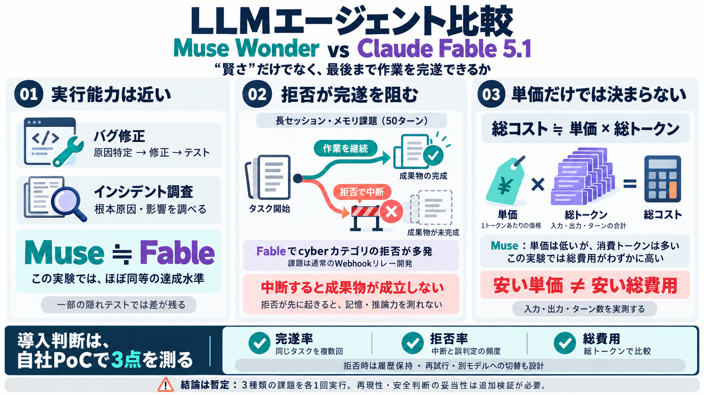

Claude Fable 5.1 vs Muse Wonder: Benchmarks, Pricing & Which Is Better in 2026
For input processing, Claude Fable 5.1 ($10.00/1M tokens) is 2.5x more expensive than Muse Wonder ($4.00/1M tokens). Fo…

LLMを“文章生成”ではなく“作業するエージェント”として比べると、精度・コスト・拒否（refusal）の壁が見えてきます。
Muse Wonder / Meta
ツール実行・長文運用
Claude Fable 5.1 / Anthropic
安全対策で拒否が発生
成功率・コスト・拒否率
完遂できるかが要点
エージェント型では、正解文章よりも「ファイル読取・編集・検索・テスト実行」を最後まで完遂できるかが成果を決めます。
完遂率（テスト合否）
途中停止＝得点0になり得る
拒否（refusal）頻度
安全フィルタが作業を中断
モデルの推論力が近くても、安全上の誤判定でルートが閉じれば、そもそも最後まで走れません。
推論が進む
修正・調査を継続
拒否が出る
cyberカテゴリで中断
成果物未達
クイズ/テストが成立せず
記事は、モデルが“ツールで手順を進める”場面を中心に、バグ修正・インシデント調査・長セッションのメモリ課題を扱います。
バグ修正
原因特定→修正→テスト
インシデント調査
根本原因・影響列挙
長セッション・メモリ
50ターン級で保持
エージェントによるバグ修正とインシデント調査では、Muse WonderがClaude Fable 5.1にかなり近い（ほぼ同等）水準で達成しています。
Muse ≒ Fable
同種の根本原因特定まで到達
Muse ≒ Fable
サービス影響の列挙を達成
隠れテストの一部でMuseが落ちるなどの差は残るが、「実行能力」は競争力がある、という読みです。
最も大きな性能差は「長セッションのメモリ課題」で発生し、Fable 5.1が50ターン中にcyberカテゴリで多数回拒否しました。
拒否（refusal）多発
cyberカテゴリで作業が止まる
成果物未成立
最終成果物/クイズが成立せず
タスク自体は“通常のWebhookリレーのバックエンド開発”で、サイバーに直接関係しない“日常コード”だった点が強調されています。
拒否が先に起きると、モデルの本来のメモリ保持力や推論力が点数に反映される前に作業が打ち切られます。
実行が進む
保存・参照・更新が可能
中断が発生
セーフティ誤判定の可能性
得点が0へ
成立条件を満たせない
単価が安いモデルでも、実験ではMuse Wonderのほうがトークン消費が多く、総費用がわずかに高くなりました。
総コスト ≒ 単価 × 総トークン
入力/出力とターン数が効く
安い=必ず安いではない
思考展開の仕方で逆転
Web検索の補足では、入力/出力のレートやキャッシュ割引が整理されていますが、最終コストは“実測の総トークン”で確かめる必要があります。
Input $10 / 1M
Output $50 / 1M
キャッシュ読み取り割引あり
Input $4 / 1M
Output $20 / 1M
ただし総トークンが鍵
Muse 1,048,576 tokens
Fable 1,000,000 tokens
長文・コードに関係
価格表は出発点。拒否率・ターン数・入力ログ量で最終的な差は変わります。
タスクは3種類で各テストは1回実行のため、揺らぎ（再現性）や統計的分布の評価が弱く、結論は“暫定”として読むのが安全です。
1回実行
別実行で結果が変わり得る
ワークフロー次第
プロンプト/ツール実装の影響
安全の妥当性
誤判定の度合いは本文だけでは断定不可
“止まる/進む”が効くため、拒否率と総コストを自社タスク文脈で実測し、フォールバック設計も含めて評価してください。
完遂率（テスト合否）
同タスクを複数回で分布を見る
拒否率（refusal）
cyber等の誤判定頻度を確認
総トークン/総費用
単価表ではなく実測で比較
拒否時の扱い（履歴保持・再試行・別モデルへのフォールバック）も、成果に直結します。
Muse Wonderはエージェント作業（バグ修正・調査）でFableにかなり近い。対してFableは拒否が“途中停止”を生み、特に長メモリ課題で結果を押し下げ得る——また総コストはトークン実測が必須です。
エージェント実行の競争力
デバッグ/調査での近接度
拒否が作業を止める
誤判定の可能性で完遂率が崩れる
For input processing, Claude Fable 5.1 ($10.00/1M tokens) is 2.5x more expensive than Muse Wonder ($4.00/1M tokens). Fo…
Claude Fable 5.1 は、高度な推論と長期的なエージェント型業務のために一般提供される Anthropic のフロンティアモデルです。価格帯では Claude ファミリーの最上位に位置し、Claude Opus 5（トークン10…
Claude Fable 5.1 is priced at $10 per million input tokens and $50 per million output tokens. Cache reads now cost $0.25…
想定読者は、Claude Code や Codex などの AI コーディングツールを使っていて、「新しいモデルに乗り換える価値があるか」を判断したい方です。ベンチマークの専門知識は前提にしません。 ## 比べる 5 つのモデル まず、…
September 1, 2026 AnthropicはClaude Fable 5.1のプロンプトガイドを以下のリンク先で公開しています。 Claude Fable 5.1 のプロンプティング - Claude Platf…